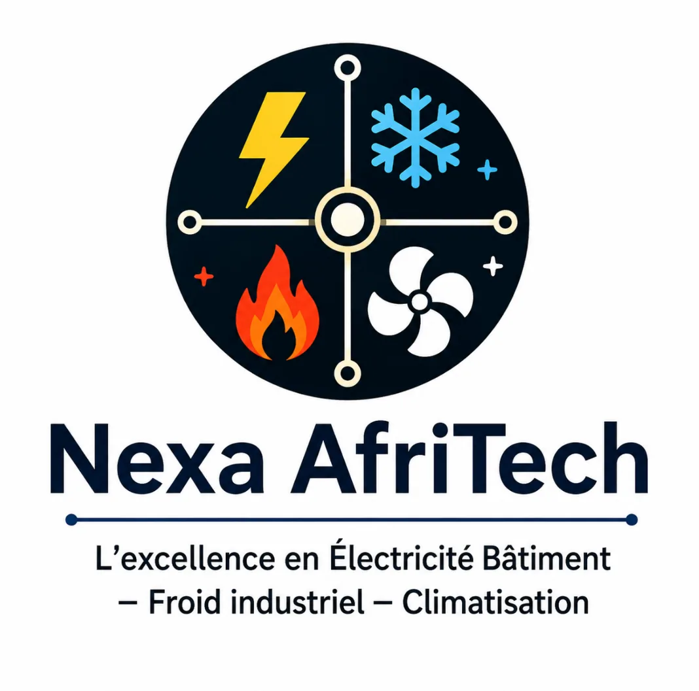

Installations électriques
Nous réalisons des installations électriques pour les maisons, villas, immeubles, locaux professionnels et autres bâtiments. Les travaux sont adaptés à la configuration du bâtiment et aux besoins des utilisateurs.

NEXA AFRITECH — SOLUTIONS PROFESSIONNELLES
Nexa AfriTech réalise des installations électriques, du câblage, des tableaux électriques, de l'éclairage, de la maintenance et du dépannage pour les bâtiments à Abomey-Calavi, Cotonou et dans différentes zones du Bénin.
📞 Appelez-nous 💬 WhatsAppNexa AfriTech accompagne les particuliers, entreprises et professionnels dans leurs projets d'électricité bâtiment au Bénin. Nous intervenons notamment à Zoundja, Abomey-Calavi, Cotonou et dans les environs selon la nature des travaux.
Nos prestations comprennent l'installation électrique de bâtiments neufs, la rénovation d'installations existantes, le câblage, la distribution électrique, les tableaux et protections, l'éclairage ainsi que la maintenance et le dépannage.
Chaque installation est étudiée selon les caractéristiques du bâtiment, ses besoins électriques et les équipements à alimenter. Notre objectif est de proposer une installation fonctionnelle, organisée, fiable et adaptée au projet.
Nous réalisons des installations électriques pour les maisons, villas, immeubles, locaux professionnels et autres bâtiments. Les travaux sont adaptés à la configuration du bâtiment et aux besoins des utilisateurs.
Réalisation du câblage et de la distribution électrique pour organiser les différents circuits du bâtiment : prises, éclairage, équipements et circuits dédiés.
Installation et raccordement de tableaux électriques ainsi que des dispositifs de protection nécessaires au bon fonctionnement et à la sécurité des circuits électriques.
Installation de solutions d'éclairage pour les espaces résidentiels et professionnels, en construction ou en rénovation, selon les besoins du bâtiment.
Maintenance, diagnostic et dépannage des installations électriques afin d'identifier les anomalies, résoudre les dysfonctionnements et contribuer au bon fonctionnement des équipements.
Une installation électrique ancienne peut ne plus répondre aux besoins actuels d'un bâtiment. Nexa AfriTech peut intervenir pour évaluer l'installation existante et réaliser les travaux nécessaires.
Les interventions peuvent notamment concerner l'amélioration ou le remplacement du câblage, l'adaptation des circuits, la rénovation du tableau électrique et l'amélioration des dispositifs de protection.
Le courant fort concerne l'alimentation et la distribution de l'énergie électrique dans les bâtiments. Nexa AfriTech intervient notamment sur les tableaux électriques, les circuits de puissance, les prises, l'éclairage et les équipements nécessitant une alimentation électrique adaptée.
Pour découvrir plus précisément nos solutions en courant fort, consultez notre page dédiée.
Les installations de courant faible regroupent notamment les solutions de communication, de transmission de données et certains équipements de sécurité. Nexa AfriTech accompagne les projets de câblage et d'installation de courant faible adaptés aux besoins du bâtiment.
Pour découvrir nos solutions dans ce domaine, consultez notre page dédiée au courant faible.
Les travaux d'électricité bâtiment peuvent être adaptés à différents types de constructions et de projets, notamment :
Nexa AfriTech accompagne les projets d'électricité bâtiment avec une approche adaptée aux besoins de chaque installation.
Basée à Zoundja, Abomey-Calavi, Nexa AfriTech intervient pour les projets d'électricité bâtiment dans la zone d'Abomey-Calavi et à Cotonou. Nous pouvons également accompagner des projets situés dans différentes zones du Bénin selon la nature et l'importance des travaux.
Vous construisez une maison, une villa, un immeuble ou un local professionnel ? Vous souhaitez rénover une installation électrique ou résoudre une panne ? Contactez Nexa AfriTech pour présenter votre projet et définir les besoins de l'intervention.
Nexa AfriTech réalise notamment des installations électriques, du câblage et de la distribution électrique, l'installation de tableaux et protections, l'éclairage, la rénovation, la maintenance et le dépannage électrique.
Oui. Nexa AfriTech intervient à Zoundja, Abomey-Calavi et à Cotonou pour les projets d'électricité bâtiment. Des interventions peuvent également être étudiées dans différentes zones du Bénin selon le projet.
Le prix d'une installation électrique dépend notamment de la superficie du bâtiment, du nombre de circuits, des équipements à alimenter, du matériel utilisé et de la complexité des travaux. Une étude du projet permet de déterminer les besoins et d'établir une estimation adaptée.
Oui. Nexa AfriTech propose des prestations de maintenance, de diagnostic et de dépannage pour contribuer au bon fonctionnement des installations électriques.
Vous avez un projet d'installation, de rénovation, de maintenance ou de dépannage électrique ? Contactez Nexa AfriTech pour vos travaux d'électricité bâtiment à Abomey-Calavi, Cotonou et dans les environs.